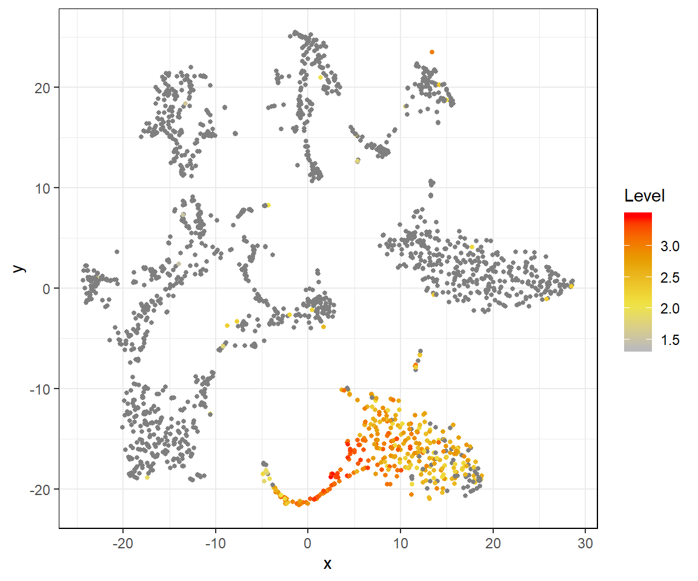
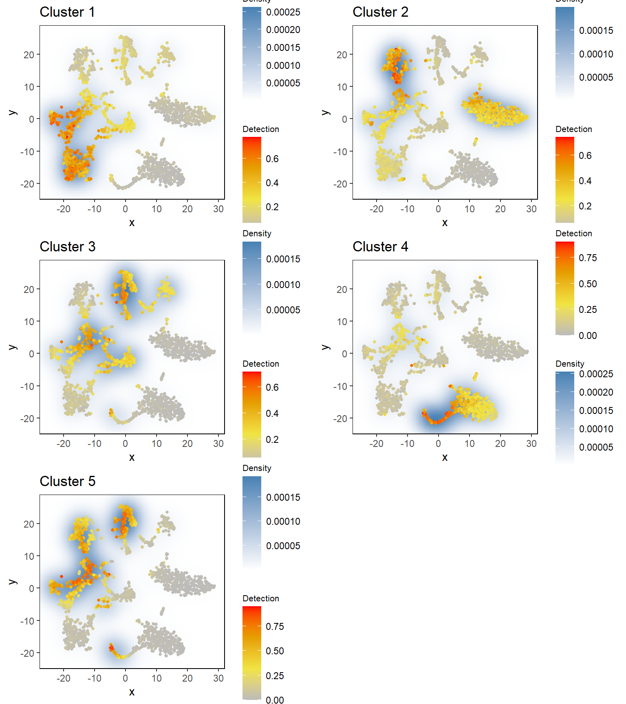

Application of ‘advanced’ mode on 2D t-SNE coordinates
Alexis Vandenbon
2019-11-08
a05_example_tsne2D_advanced.Rmdtl;dr
You can indicate the general expression levels of cells using input parameter use.advanced.sampling. If you do that,singleCellHaystack takes the general expression levels into account and finds genes that are different from that general expression pattern.
Preparing the input data
The data used in these examples can be found here. We recommend downloading the .rda file and loading it using the load() function. You can also download the individual data files separately.
load(url("https://genomics.virus.kyoto-u.ac.jp/alexisvdb/singleCellHaystack/tabula_muris_marrow_P7_2.rda"))
ls()
#> [1] "dat.detection" "dat.expression" "dat.pca" "dat.tsne"
#> [5] "dat.umap"This data should include the following objects:
-
dat.expression: a matrix object with the expression of genes (rows) in each cell (columns). -
dat.detection: a logical matrix object with the detection of genes (rows) in each cell (columns). TRUE means detected, FALSE means not detected. -
dat.pca: the output of PCA. This data.frame contains thefirst 50 pricipal components. -
dat.tsne: a data.frame with t-SNE coordinates (2D). -
dat.umap: a data.frame with UMAP coordinates (2D).
Let’s have a look at the t-SNE plot, colouring cells be the number of genes detected in each cell:
general.detection <- apply(dat.detection, 2, sum)
ggplot(dat.tsne, aes(x = V1, y = V2, colour = general.detection)) + labs(x = "t-SNE1", y = "t-SNE2") +
geom_point(size=2) + scale_color_gradient(low="yellow", high="red") + labs(color = "Det. genes") There are several groups of cells,although the borders between are not clear and several might consist of additional subclusters.
There are several groups of cells,although the borders between are not clear and several might consist of additional subclusters.
Moreover, the cells in the bottom right have in general fewer detected genes. If a gene is detected predominantly in these cells and not in others, this tendency goes against the general trend in expression. Such a trend would be especially surprizing.
We can use singleCellHaystack to find genes with biased expression patterns in this 2D plot, taking into account general gene expression trends, using the option use.advanced.sampling.
Application of singleCellHaystack in advanced mode
First, load the package, and set a random seed to ensure replicability.
library(singleCellHaystack)
#>
#> 次のパッケージを付け加えます: 'singleCellHaystack'
#> 以下のオブジェクトは '.GlobalEnv' によってマスクされています:
#>
#> dat.expression, dat.tsne
set.seed(1)Next, run haystack on the t-SNE coordinates. These are 2D coordinates, so we set ‘method’ to ‘2D’. We also give the detection values as input to ‘detection’. use.advanced.sampling is set to the vector of detected genes per cell, general.detection. By doing this, haystack will calculate cell distributions and perform randomizations taking into account the general detection levels.
res.tsne.adv <- haystack(x = dat.tsne, detection = dat.detection, use.advanced.sampling = general.detection, method = "2D")
#> ### calling haystack_2D()...
#> ### setting parameters...
#> ### calculating Kullback-Leibler divergences...
#> ### ... 1000 values out of 12030 done
#> ### ... 2000 values out of 12030 done
#> ### ... 3000 values out of 12030 done
#> ### ... 4000 values out of 12030 done
#> ### ... 5000 values out of 12030 done
#> ### ... 6000 values out of 12030 done
#> ### ... 7000 values out of 12030 done
#> ### ... 8000 values out of 12030 done
#> ### ... 9000 values out of 12030 done
#> ### ... 10000 values out of 12030 done
#> ### ... 11000 values out of 12030 done
#> ### ... 12000 values out of 12030 done
#> ### starting randomizations...
#> ### ... 10 values out of 200 done
#> ### ... 20 values out of 200 done
#> ### ... 30 values out of 200 done
#> ### ... 40 values out of 200 done
#> ### ... 50 values out of 200 done
#> ### ... 60 values out of 200 done
#> ### ... 70 values out of 200 done
#> ### ... 80 values out of 200 done
#> ### ... 90 values out of 200 done
#> ### ... 100 values out of 200 done
#> ### ... 110 values out of 200 done
#> ### ... 120 values out of 200 done
#> ### ... 130 values out of 200 done
#> ### ... 140 values out of 200 done
#> ### ... 150 values out of 200 done
#> ### ... 160 values out of 200 done
#> ### ... 170 values out of 200 done
#> ### ... 180 values out of 200 done
#> ### ... 190 values out of 200 done
#> ### ... 200 values out of 200 done
#> ### estimating p-values...
#> ### returning result...Let’s have a look at the most biased genes. The most strongly biased gene is Trim10. We can plot the expression an detection of this gene using the plot_gene_haystack function.
show_result_haystack(res.haystack = res.tsne.adv, n = 5)
#> D_KL log.p.vals T.counts
#> Trim10 2.491996 -2303.037 368
#> Gypa 2.208790 -2171.948 448
#> Snca 2.177563 -2094.571 474
#> Slc4a1 2.148274 -2001.420 372
#> Rsad2 1.974219 -1930.471 434
# plotting detection of this gene
plot_gene_haystack(x = dat.tsne, gene = "Trim10", expression = dat.detection)
# plotting log expression of this gene
plot_gene_haystack(x = dat.tsne, gene = "Trim10", expression = log10(dat.expression)) 
From these plots, we can see that Trim10 is expressed almost exclusively in the bottom right group of cells. As seen above, these cells have in general fewer detected genes, so the pattern of Trim10 is especially surprizing: it is deteced in cells that express in general few genes.
This explains why the advanced mode of singleCellHaystack judges Trim10 to be the most significantly biased.
Compare the pattern of Trim10 with that of the most biased gene in the default mode (see here). The most biased gene found in the “default” mode is strongly biased, but is detected in cells that have in general many detected genes.
Next, let’s take the top 1000 biased genes, and cluster them by their expression pattern in the 2D t-SNE coordinates. Here we use hclust_haystack, which uses hierarchical clustering. Alternatively, we could use kmeans_haystack for k-means clustering.
# get the top 1000 biased genes in the result
res.top <- show_result_haystack(res.haystack = res.tsne.adv, n = 1000)
# cluster biased genes by their expression pattern in the 2D plot
genes.top <- row.names(res.top)
res.hc <- hclust_haystack(x = dat.tsne, genes = genes.top, detection = dat.detection)hclust_haystack returns as result a hclust tree, which we can cut into clusters using the cutree function. Here, we arbitrarily set the number of clusters to 5.
res.hc.clusters <- cutree(res.hc, k=5)
table(res.hc.clusters)
#> res.hc.clusters
#> 1 2 3 4 5
#> 184 234 223 114 245Let’s run through the 5 clusters and plot their averaged detection pattern using plot_gene_set_haystack, which is similar to plot_gene_haystack but uses a set of genes as input instead of just 1 gene.
pl <- lapply(1:5, function(cluster) {
gene.set <- names(res.hc.clusters)[res.hc.clusters==cluster]
plot.title <- paste0("Cluster ", cluster)
p <- plot_gene_set_haystack(x = dat.tsne, genes = gene.set, detection = dat.detection)
p + ggtitle(plot.title) + theme(legend.title = element_text(size = 8))
})
plot_grid(plotlist = pl, ncol = 2)
res.hc.clusters["Trim10"] # the most biased gene is in cluster 4
#> Trim10
#> 4The most biased genes, Trim10, was clustered into cluster 4. Comparing its expression pattern (see above) with that of each cluster, we can indeed see that it fits most closely with that of cluster 4. Cluster 4 genes are on average detected almost exclusively in the bottom right group of cells.